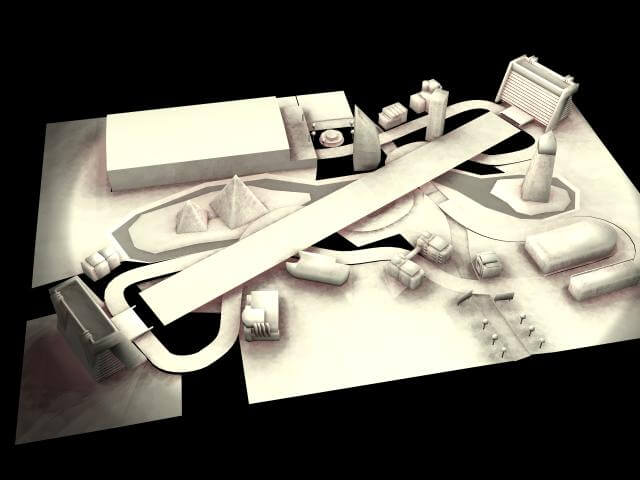

Emergency Heroes
Game and level design for a Nintendo Wii videogame made at Ubisoft Reflections.
#game design

Nintendo Wii was about to be launches worldwide. Ubisoft had a good number of titles ready to release with the launch. This time to market production was made within the enviroment of Driver production.
The targetThe audience is kids and teenagers, with still early games dexterity and easy cognitive references and practices. As 2008 is still a time where smartphones are not penetrated in the market and tablets don't exists. Kids have their semiotic references in console games and domestic interfaces.
 The ScopeThe controls are exclusively running on the Wiimote, which is an early accelerometer device. The device emulates a steering wheel. The narrative follows up a classic structure with twists in the history. The characters are the vehicle for learning the game mechanics and development of the game experience.
The engineThe engine was the current driver game engine based on a graph emulating paths. Every logical piece of the videogame was scripted in Lua. Also a visual scripting tool was provided with common classes in order to speed up the development amongts game designers.
The game was developed in 11 months. The main challenge was the approach to early audiences with nobel skills on interface use and game semiotics. Also coming out with mission set up was challenging. We had our guidelines on storyline, level design, game mechanics, etc... Compelling missions and goals for the player were a must in order to achieve a successful title. One of the challenges were to introduce game mechanics to the young players. Displaying the right visual cues, and leading them across the sandbox environment to the right spots. For that purpose we wanted to develope a GPS like system display leading the player to the mission trigger spots. This was made having in mind the future AR windshells. And it was resolved by painting textures on the road ahead of the player vision.
Once the main structure of the narrative and missions were agreed. We would sit down, 4 designers of us, on a daily basis in order to review missions, game props, development, interface, gametest results and crative outcomes. We set up a brief research preproducion period before moving into development. After that, most of the missions and landscapes of the game were drawn and represented whatever the technique would be. We were organised in teams of 4 people: a game designer, a scripter, a graphix artist, a level editor. My role was a game designer and my goal was to provide output and backlog items to my team for the production. A level would be introduced to stakeholders, broke down into production assets to deliver. Also playtesting and focus testing was a task with the goal of understanding the ergonomic outcome of the game on real players.
We had a large network and vast resources to verify the game proposal. Also editorial team test and understand potential market value of each game idea. Executionwise we used to organise focus tests at every version so we would be able to verify the right implementation of mechanics and interfaces.
LearningsA process of translate research ideas, findings and learnings about emergency services and synthesise them into easy to understand game mechanics. I learnt how to how to structure levels for driving games. Also about mapping controls, tweacking values based on player inputs and semiotics of videogames. Achieving what the player should do is an art. It takes a lot of understanding of semiotics, user interfaces, user experience, psychology and computer graphics. I also
HELLO
üôÇ
My name is Miguel Ángel Álvarez Rodriguez García Cardalda interaction designer with crafting skills and passion
Status: available
Location: Barcelona
✉️
Thank you!
I will get back to you shortly.